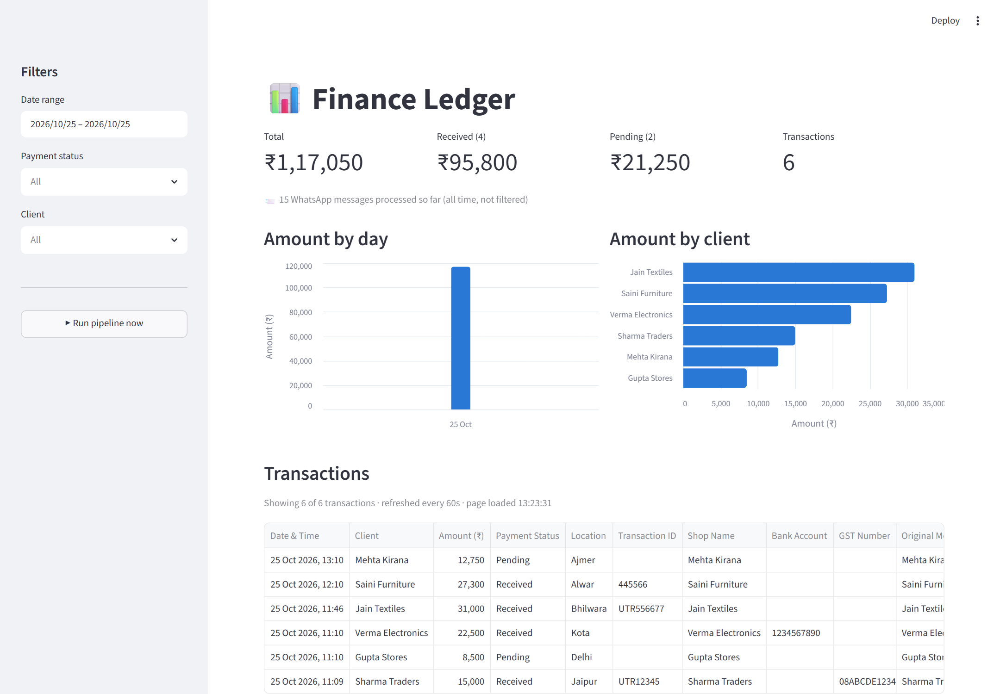

Small businesses run on WhatsApp: “Sharma Traders, Jaipur received ₹15,000, UTR12345”. KhataAI turns that chat stream into a 10-column Google Sheets ledger, a daily WhatsApp summary and a live dashboard.
Fully automatic and privacy-first, built on the Model Context Protocol.

Each node calls one small function and the routers are plain if/else. Messages are marked processed only after a successful write, so a failed run retries the same messages next time.
Hand-labelled synthetic sets, scored field by field after normalisation. Five of v1's six dev failures were one pattern: a business name put in client_name. v2 defines every field.
SQLite dedup plus commit-after-write, a cross-process lock so the scheduler and the dashboard button never double-ingest, and Pydantic validation with one retry.
Every 30 minutes or from the dashboard button: new WhatsApp messages → Sheet.
Daily at 21:00: today's totals → WhatsApp, in plain Python math.
KPIs, filters, charts, the ledger and a Run pipeline now button.